Nowe ogłoszenia
 Cyberbezpieczeństwo
Cyberbezpieczeństwo
Sztuczna inteligencja i cyberbezpieczeństwo sercem
cyfrowej tarczy surowcowej Polski
20.06.2025
Autor: Wydział Elektroniki i Technik Informacyjnych
W dobie rosnących zagrożeń i dynamicznych przemian technologicznych, Politechnika Warszawska wraz z
Państwowym Instytutem Geologicznym – PIB podejmuje ambitne działania na rzecz cyfrowej tarczy surowcowej
kraju. Projekt e-Geologia, łącząc zaawansowaną analizę danych z cyberbezpieczeństwem, stanowi fundament
nowoczesnej infrastruktury geologicznej, która ma realny wpływ na strategiczne bezpieczeństwo Polski.
Erasmus+
Erasmus+ Uniwersytet Deusto oferuje miejsca na
staże badawcze
20.06.2025
Autor: WEITI / Erasmus+
Jeśli interesuje Cię praca badawcza w środowisku międzynarodowym i chcesz rozwijać się w zakresie
nowoczesnych technologii, oferta Uniwersytetu Deusto w Hiszpanii może być dla Ciebie idealnym wyborem. W
ramach programu Erasmus+ studenci PW mają szansę uczestniczyć w projektach DeustoTech – instytutu
znanego z innowacyjności i ścisłej współpracy z przemysłem.
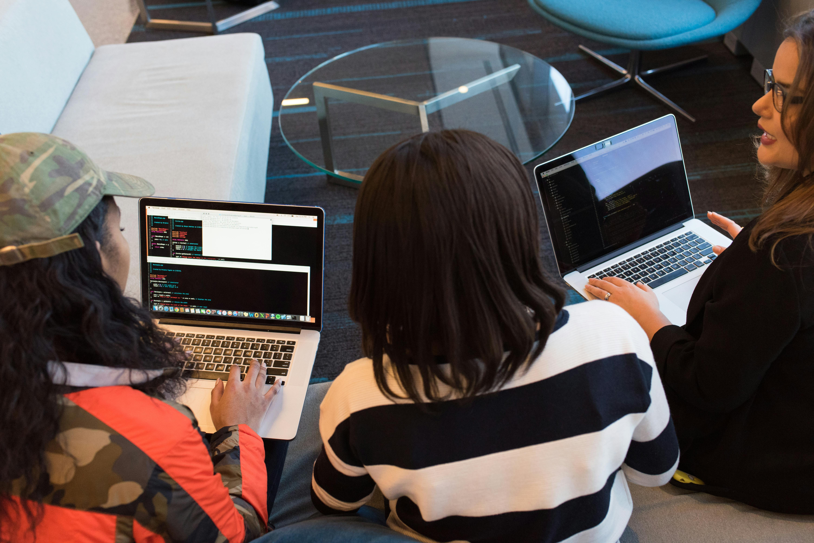
HackathonKraken i Inteligentne Systemy zgarniają całą pulę w
Real Estate Hackathon
20.06.2025
Autor: KNMP Kraken
Real Estate Hackathon 2025 okazał się pełnym sukcesem dla Politechniki Warszawskiej, której zespoły
całkowicie zdominowały podium, prezentując imponujące projekty z zakresu inteligentnych i zrównoważonych
rozwiązań biurowych. Wydarzenie, będące okazją do współpracy między wydziałami i kierunkami, uwypukliło
siłę interdyscyplinarnego podejścia do projektowania przyszłości miejsc pracy.
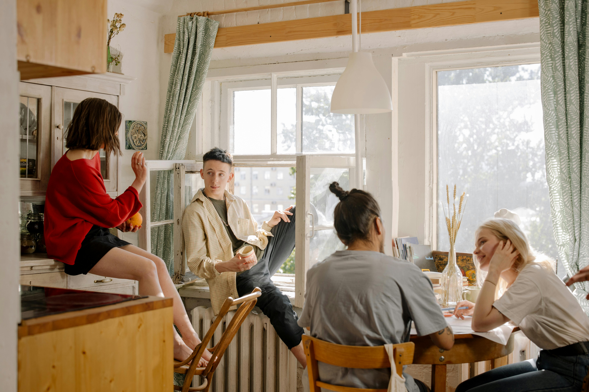
Zrównoważony rozwójEKODEMIK – studencki głos w sprawie przyszłości
akademików PW
18.06.2025
Autor: BKiP / KN Architektury Kryzysu Klimatycznego
Odpowiadając na wyzwania klimatyczne i potrzebę poprawy jakości życia w domach studenckich, studenci
Politechniki Warszawskiej z Koła Architektury Kryzysu Klimatycznego zaprojektowali innowacyjną koncepcję
przekształcenia otoczenia akademików. EKODEMIK to wizja zielonego kampusu, która powstała w bezpośrednim
dialogu z mieszkańcami i spotkała się z pozytywnym odzewem administracji.
Kariera
Od Politechniki Warszawskiej do Management
Trainee!
18.06.2025
Autor: Biuro Karier
Jeśli kończysz studia i marzysz o dynamicznym starcie kariery w międzynarodowym środowisku, program
liderski Grupy Jeronimo Martins może być dla Ciebie idealną okazją. To prestiżowa ścieżka zawodowa
obejmująca rozwój w ramach marek takich jak Biedronka i Hebe, gwarantująca stabilne zatrudnienie,
atrakcyjne wynagrodzenie oraz szeroki pakiet benefitów.
Mentoring
Otwieramy rekrutację do 7 edycji Programu
Mentoringowego PW
18.06.2025
Autor: Biuro Karier
Program Mentoringowy Politechniki Warszawskiej to unikalna szansa na rozwój zawodowy i osobisty przy
wsparciu doświadczonych absolwentów. W ramach 7. edycji, 37 mentorów czeka na ambitnych studentów i
młodych absolwentów, gotowych do pięciomiesięcznej współpracy opartej na regularnych spotkaniach,
inspiracji i wspólnym planowaniu kariery.
 Startupy
Startupy
Dołącz do 8. edycji Szkoły Pionierów PFR i zbuduj
swój startup
18.06.2025
Autor: Biuro Karier
Jeśli chcesz tworzyć innowacyjne rozwiązania odpowiadające na globalne wyzwania klimatyczne, Szkoła
Pionierów PFR to idealna przestrzeń do rozwinięcia Twojego pomysłu. Wspierana przez Allegro, 8. edycja
programu stawia na technologie i sztuczną inteligencję w służbie klimatu, oferując intensywną edukację,
networking oraz szansę na pozyskanie finansowania i wejście na międzynarodową scenę startupową.
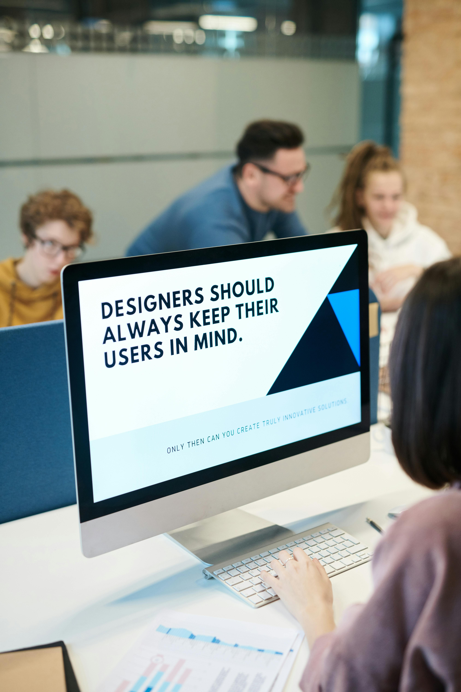
DostępnośćSzkoła Dostępności Cyfrowej – projekt edukacyjny
dla specjalistów ds. dostępności
17.06.2025
Autor: Biuro ds. Społecznej Odpowiedzialności Uczelni
Szkoła Dostępności Cyfrowej to kompleksowy program edukacyjny skierowany do osób pragnących rozwijać
kompetencje w zakresie tworzenia i audytowania rozwiązań cyfrowych zgodnych ze standardami dostępności.
Realizowany z udziałem Ministerstwa Cyfryzacji projekt oferuje nie tylko praktyczne szkolenia i
certyfikaty, ale także realne przygotowanie do pracy jako specjalista ds. dostępności w zgodzie z
aktualnymi regulacjami prawnymi.
Uczelnia
Powołanie Komisji Rzetelności Naukowej PW
17.06.2025
Autor: Jego Magnificencja Rektor
W trosce o wysokie standardy etyki i jakości badań naukowych Politechnika Warszawska powołała Komisję
Rzetelności Naukowej. Jej zadaniem będzie monitorowanie i ocena działalności publikacyjnej oraz
współpracy naukowej środowiska akademickiego PW, co stanowi istotny krok w kierunku transparentności i
odpowiedzialności w nauce.
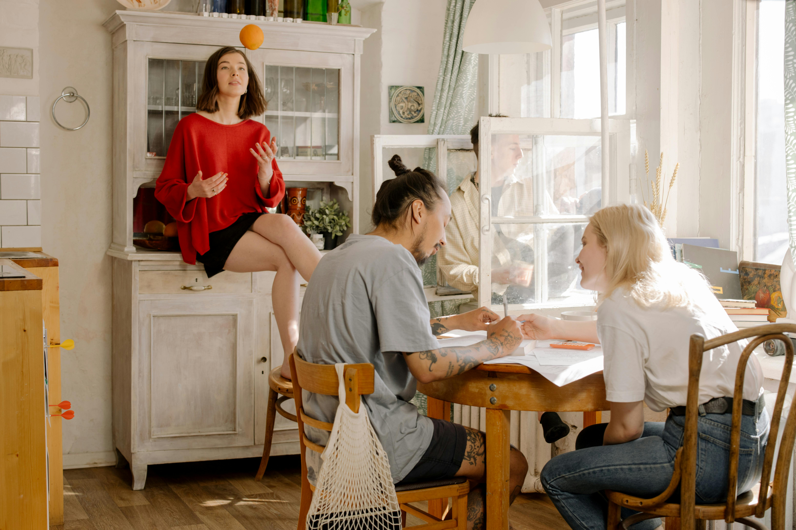
Kwaterunek🚨 OSTATNI DZIEŃ REJESTRACJI! Wakacyjna akcja
kwaterunkowa 2025
16.06.2025
Autor: Komisja Kwaterunkowa Samorządu Studentów PW
Wakacyjna akcja kwaterunkowa PW dobiega końca, a dzisiejszy dzień to ostatnia szansa na zgłoszenie się i
zapewnienie sobie miejsca w domu studenckim na lato 2025. Proces rejestracji odbywa się online, a
potwierdzenie zakwaterowania wymaga uregulowania opłaty gwarancyjnej – warto działać szybko i nie
przegapić terminu!
 Konkurs
Konkurs
Enactus World Cup: studenci PW z projektem MedWave
w globalnym finale
16.06.2025
Autor: BKiP / Enactus PW
Projekt MedWave, opracowany przez studentów z PW, zwyciężył w Enactus Poland National Competition 2025.
Narzędzie AI wspiera lekarzy w tworzeniu dokumentacji medycznej. Zespół zakwalifikował się do światowego
finału Enactus World Cup w Bangkoku...
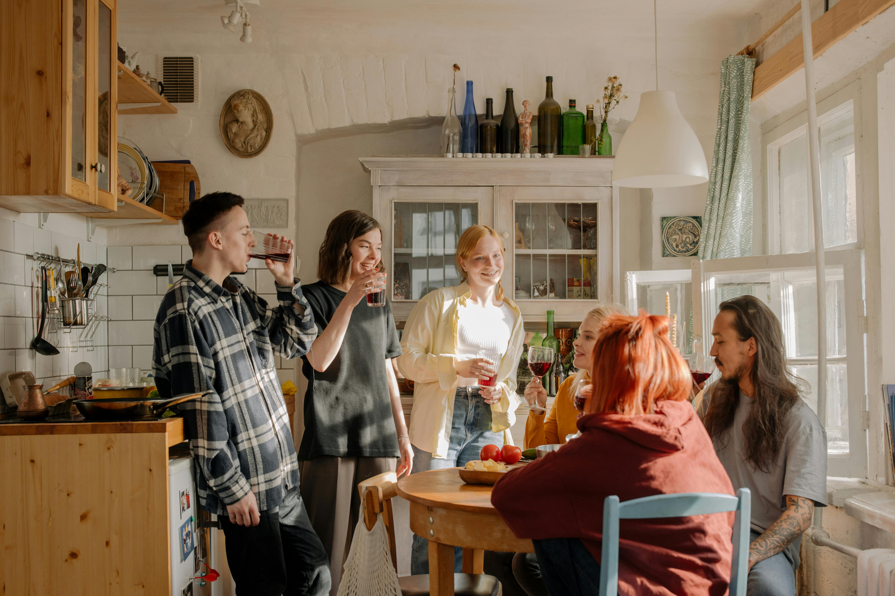
Kwaterunek🚨 OSTATNI DZIEŃ REJESTRACJI! Wakacyjna akcja
kwaterunkowa 2025
16.06.2025
Autor: Komisja Kwaterunkowa Samorządu Studentów PW
Wakacyjna akcja kwaterunkowa 2025 wkracza w decydującą fazę – dzisiaj mija termin zgłoszeń! Studenci
zainteresowani zakwaterowaniem na lato mają ostatnią szansę, by zarejestrować się online i zagwarantować
sobie miejsce w domu studenckim przed ogłoszeniem wyników 24 czerwca.
 Zdrowie
Zdrowie
🎓 Masz dostęp do bezpłatnej opieki medycznej w
CenterMed Warszawa!
13.06.2025
Autor: SSPW / CenterMed Warszawa
CenterMed Warszawa oferuje studentom Politechniki Warszawskiej kompleksową i łatwo dostępną opiekę
medyczną – zarówno w ramach NFZ, jak i w formie płatnych usług ze zniżką. Dzięki dogodnym lokalizacjom w
pobliżu uczelni i akademików, szerokiemu zakresowi badań oraz specjalistycznym konsultacjom, studenci
mogą szybko i wygodnie zadbać o swoje zdrowie.
 Granty
Granty
Konkurs na granty rektorskie 2025 dla kół
naukowych
13.06.2025
Autor: Jego Magnificencja Rektor
Ruszył konkurs na granty dla kół naukowych PW – do zdobycia 600 tys. zł na projekty badawcze,
koncepcyjne i konstrukcyjne. Termin składania wniosków: do 30 czerwca przez EZD. Wyniki poznamy podczas
targów KONIK...
Rekrutacja
📢 Trwa rekrutacja do Polskiej Komisji
Akredytacyjnej – dołącz do Zespołu Ekspertów ds. Studenckich!
13.06.2025
Autor: Parlament Studentów Rzeczypospolitej Polskiej
Jeśli interesujesz się jakością kształcenia i chcesz zaangażować się w ocenę programów studiów na
polskich uczelniach, dołączenie do Zespołu Ekspertów ds. Studenckich PKA to świetna okazja. Udział w
pracach Komisji to nie tylko prestiżowe doświadczenie, ale także szansa na współpracę z ekspertami i
zdobycie cennych kompetencji w zakresie szkolnictwa wyższego.
Studenci
Parlament Studentów RP na konferencji o stanie
akademików w Polsce
13.06.2025
Autor: Parlament Studentów Rzeczypospolitej Polskiej
Konferencja w Ministerstwie Nauki i Szkolnictwa Wyższego poświęcona problematyce domów studenckich stała
się ważnym forum wymiany wiedzy i doświadczeń między środowiskiem akademickim a władzami publicznymi.
Dzięki zaangażowaniu Parlamentu Studentów RP głos studentów w sprawie warunków socjalno-bytowych
wybrzmiał mocno i merytorycznie, torując drogę do działań na rzecz poprawy sytuacji mieszkaniowej na
uczelniach.
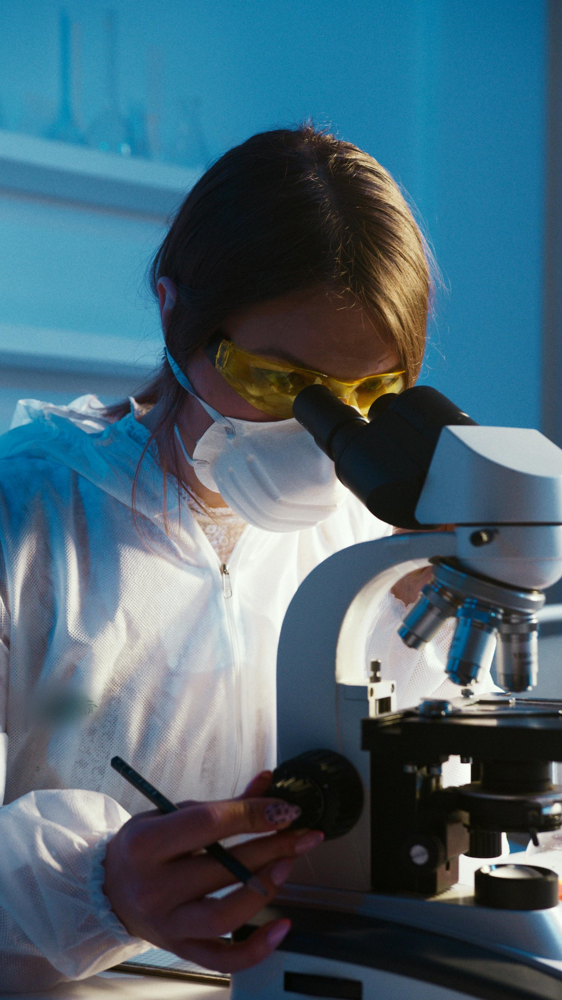
BadaniaNaukowcy z PW podglądają żywe komórki
13.06.2025
Autor: MCHTR / QCI Lab
Zespół z QCI Lab opracował algorytm IGA, który pozwala obrazować żywe komórki z niską fototoksycznością.
Badania realizowane są z partnerami z Norwegii i Niemiec, a wyniki opublikowano w czasopiśmie ACS
Photonics...
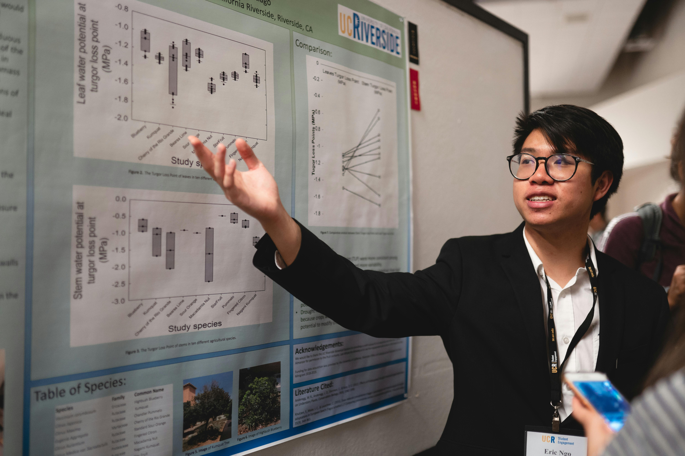
InnowacjeTechnologie z PW na targach w Poznaniu, Katowicach
i Warszawie
13.06.2025
Autor: Biuro Komunikacji i Promocji
PW zaprezentowała swoje osiągnięcia z zakresu AI, mikroelektroniki i technologii kwantowych podczas
trzech prestiżowych wydarzeń. Wystawiono m.in. motocykl wyścigowy, mikrograwitacyjne eksperymenty i
teleskop GROMiT...
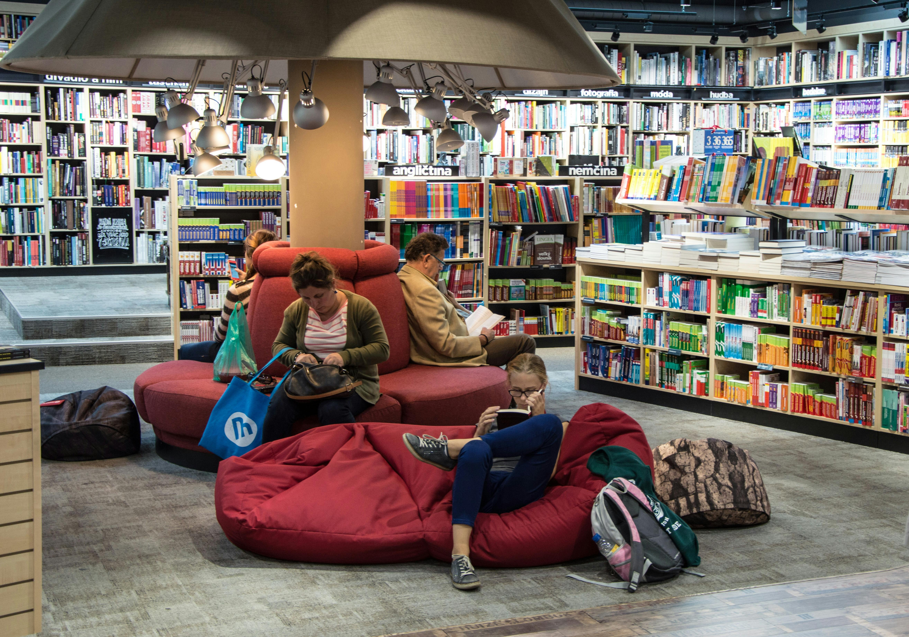
KampusStrefa relaksu i nauki – nowa przestrzeń dla
studentów w płockiej Filii PW
13.06.2025
Autor: Filia w Płocku
Nowa przestrzeń dla studentów w Płocku – z miejscami do pracy, relaksu i rozrywki. Powstała dzięki
Stowarzyszeniu Przyjaciół PW w Płocku i firmie Artplex. Miejsce sprzyja nauce i integracji...
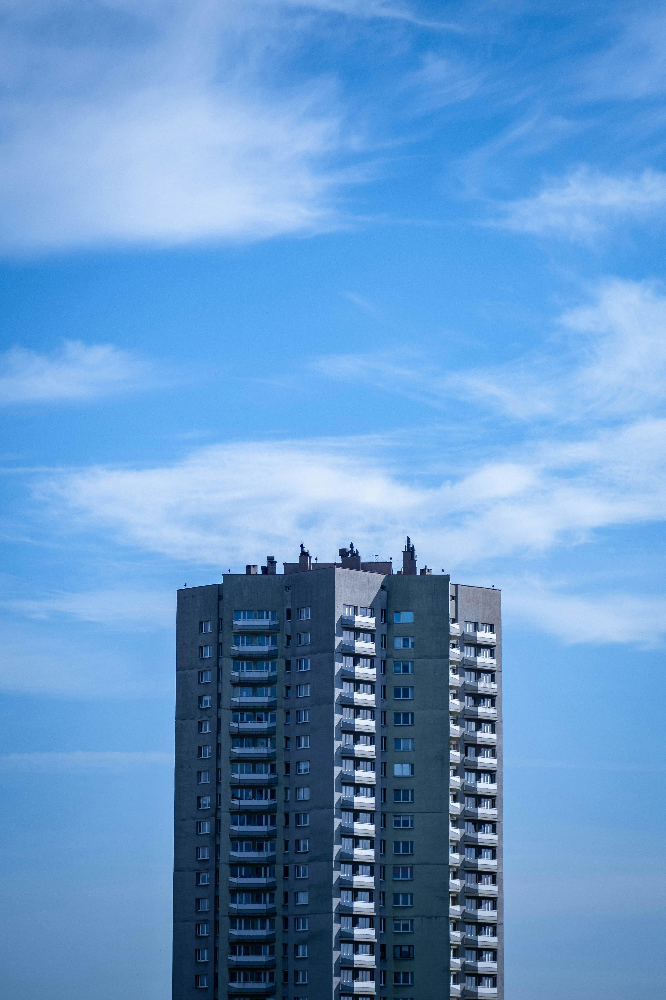
KwaterunekNowy komunikat w sprawie DS „Żaczek”
13.06.2025
Autor: Rzecznik Prasowy / SSPW
DS „Żaczek” zostanie czasowo zamknięty z końcem czerwca ze względów przeciwpożarowych. Uczelnia zapewnia
alternatywne zakwaterowanie i pomoc w przeprowadzce. Planowany remont potrwa około 3 lata...
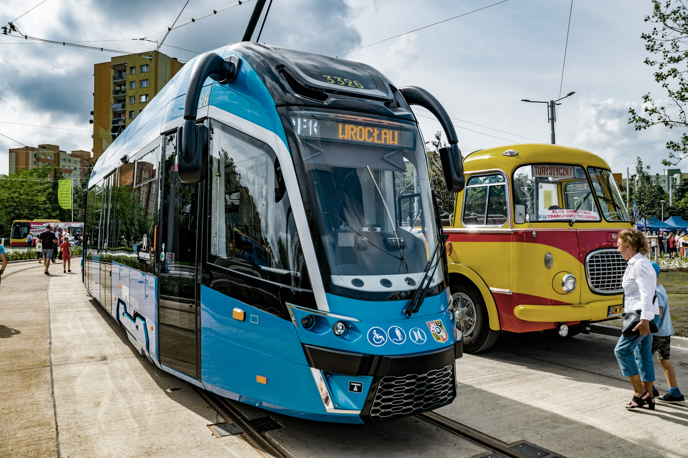
Infrastruktura✨ Goście z Zarządu Dróg Miejskich na naszym
wydziale – prezentacja o bezpiecznych przejściach dla pieszych
11.06.2025
Autor: Koło Naukowe Inżynierii Komunikacyjnej
Bezpieczeństwo pieszych w przestrzeni miejskiej to temat, który nie traci na aktualności – dlatego z
radością gościliśmy ekspertów z Zarządu Dróg Miejskich w Warszawie, którzy podzielili się praktyczną
wiedzą z zakresu projektowania bezpiecznej infrastruktury. Spotkanie było okazją do analizy błędów
projektowych oraz poznania sprawdzonych rozwiązań, a jego zapis dostępny jest dla wszystkich w formie
wideo.
Ankieta
🎓 Działasz w kole naukowym? Robisz badania na
uczelni? Wypełnij ankietę PSRP!
11.06.2025
Autor: Parlament Studentów Rzeczypospolitej Polskiej
Jeśli działasz naukowo – w kole, projekcie badawczym czy indywidualnie – Twój głos może realnie wpłynąć
na kształtowanie lepszego systemu wsparcia dla studentów zaangażowanych w rozwój nauki. Parlament
Studentów RP prowadzi ogólnopolską ankietę, której celem jest zebranie doświadczeń i potrzeb środowiska
studenckiego w zakresie działalności badawczej.
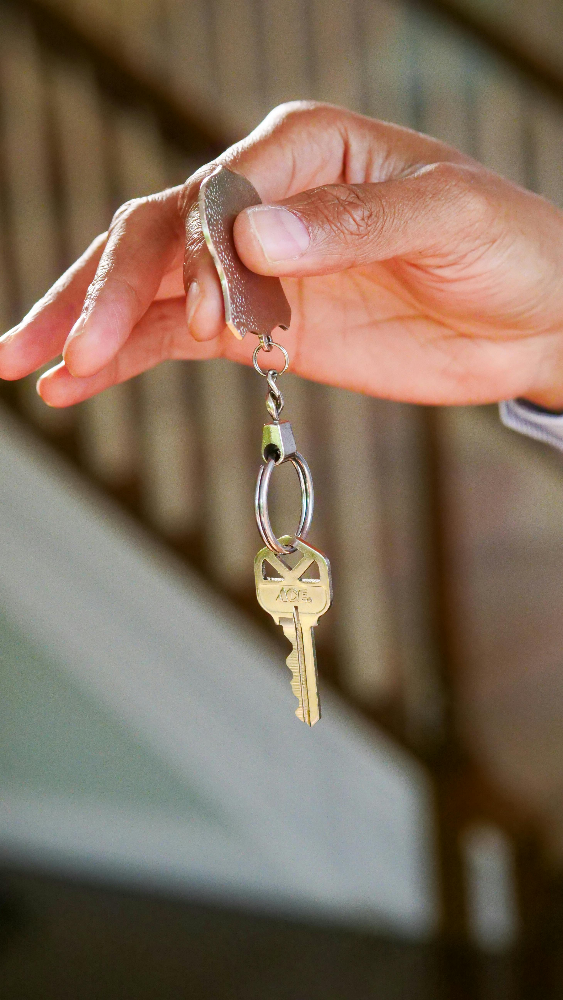
Kwaterunek🚨 STARTUJEMY! Wakacyjna akcja kwaterunkowa
oficjalnie ruszyła!
10.06.2025
Autor: Komisja Kwaterunkowa Samorządu Studentów PW
Wakacje coraz bliżej, a z nimi możliwość skorzystania z akademików Politechniki Warszawskiej w ramach
letniej akcji kwaterunkowej. Od 10 do 16 czerwca studenci mogą zgłaszać się przez system ESKS, aby
zapewnić sobie miejsce w domu studenckim na wakacyjny okres – warto działać szybko i nie zostawiać
rejestracji na ostatnią chwilę.
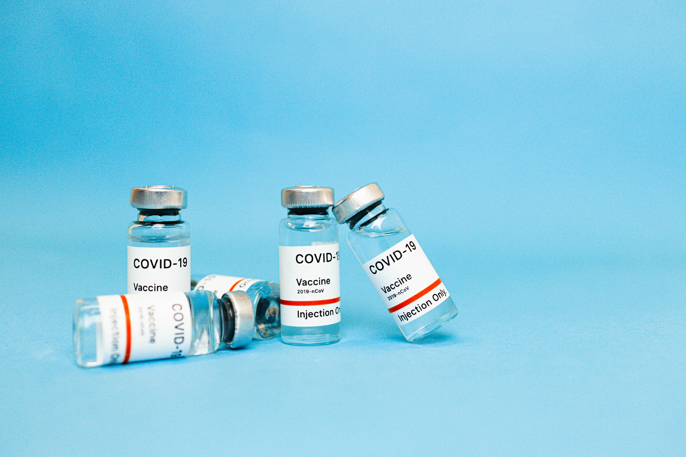
KarieraZostań Student Ambassador AstraZeneca na rok
akademicki 2025/2026!
10.06.2025
Autor: Biuro Karier
Jeśli studiujesz kierunki związane z technologią, naukami przyrodniczymi lub zarządzaniem i chcesz
rozwijać swoje kompetencje w globalnym środowisku, program ambasadorski AstraZeneca to szansa na
wyjątkowe doświadczenie. Jako Student Ambassador będziesz reprezentować firmę na uczelni, zdobywając
cenne umiejętności i nawiązując kontakty z ekspertami z branży biotechnologicznej.
 Organizacja
Organizacja
Funkcjonowanie PW w dniach 19–22 czerwca 2025 r.
09.06.2025
Autor: Kanclerz
W związku z długim weekendem dostęp do wybranych budynków PW będzie możliwy tylko za okazaniem
przepustki. Zapewniono dyżury techniczne i możliwość kontaktu ze Strażą Akademicką lub dyżurnym
kanclerzem.
Rekrutacja
🎓 Ruszyła rekrutacja do zespołu ekspertów ds.
studenckich Polskiej Komisji Akredytacyjnej!
09.06.2025
Autor: Parlament Studentów Rzeczypospolitej Polskiej
Dołączenie do zespołu ekspertów PKA to możliwość zdobycia wyjątkowego doświadczenia w obszarze
szkolnictwa wyższego i bezpośredniego udziału w procesach kształtujących ofertę edukacyjną uczelni w
Polsce. Kandydaci będą uczestniczyć w wizytacjach, analizować programy studiów i współpracować z
ekspertami z całego kraju, mając realny wpływ na jakość i rozwój edukacji akademickiej.
Konkurs
7 edycja konkursu na najlepszą pracę dyplomową
AGRO
09.06.2025
Autor: Biuro Karier
Konkurs AGRO to doskonała okazja dla studentów, którzy obronili prace dyplomowe w latach 2024–2025 i
poruszają tematykę innowacji w rolnictwie lub zrównoważonej produkcji żywności. Oprócz szansy na nagrody
finansowe i publikację wyników, laureaci mogą liczyć na cenne doświadczenie w branży dzięki stażom i
wizytom studyjnym u renomowanych partnerów.
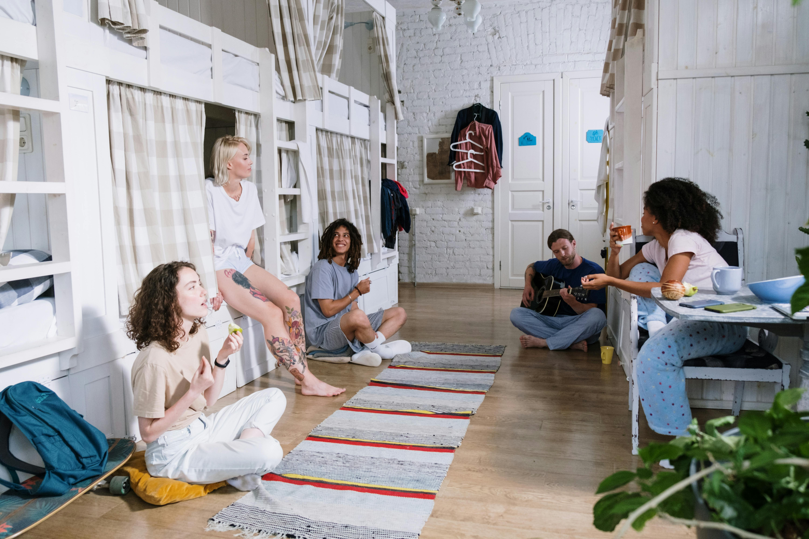
Kwaterunek📣 Akcja kwaterunkowa zakończona! 🏁
09.06.2025
Autor: Komisja Kwaterunkowa Samorządu Studentów PW
Po zakończeniu akcji kwaterunkowej nadszedł czas na potwierdzenie przyznanych miejsc – studenci
zakwalifikowani do zakwaterowania muszą dopełnić formalności, by nie stracić miejsca. Warto uważnie
sprawdzić wyniki i zapoznać się ze szczegółowymi zasadami, zwłaszcza jeśli rozważasz złożenie odwołania.
Ankiety
⏳ Ostatnie odliczanie – nie przegap ankiet!
07.06.2025
Autor: Komisja Dydaktyczna Samorządu Studentów PW
To ostatnia szansa, by ocenić prowadzących i pomóc ulepszyć zajęcia na Twoim wydziale! Każda uwaga to
krok w stronę lepszej edukacji – wypełnij ankiety już teraz!
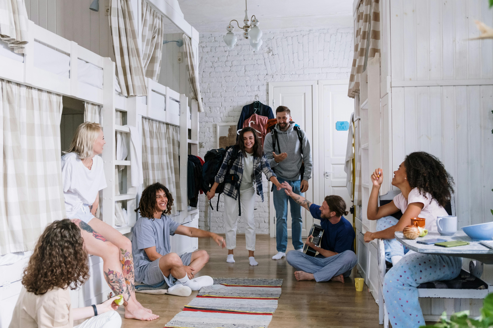
Kwaterunek⏰ Zostały tylko 3 dni! Wakacyjna akcja
kwaterunkowa
06.06.2025
Autor: Komisja Kwaterunkowa Samorządu Studentów PW
Czas ucieka – wakacyjna akcja kwaterunkowa wkrótce dobiegnie końca, a możliwość zapewnienia sobie
miejsca w akademiku przepadnie razem z nią. Rejestracja trwa tylko do 16 czerwca, dlatego warto działać
szybko, by móc spokojnie planować letni wypoczynek z gwarancją zakwaterowania.
 Sesja
Sesja
Sesja – czas najwyższego stresu studenckiego!
06.06.2025
Autor: WRS MiNI PW
Nadchodzi jeden z najbardziej wymagających okresów w życiu studenta – sesja egzaminacyjna. Wydziałowa
Rada Samorządu MiNI wspiera swoich kolegów i koleżanki, udostępniając dodatkowe przestrzenie do nauki i
życząc wszystkim sukcesów oraz jak najmniej stresu przy zaliczeniach.
Merch
📣 Sklep z merchem PW Elektryczny znów otwarty!
06.06.2025
Autor: WRS Elektryczny PW
Fani wydziałowego stylu mają kolejną szansę, by zaopatrzyć się w bluzy PW Elektryczny – klasyczne,
oversize, z haftem czy personalizacją. To świetna okazja, by pokazać swoją przynależność do społeczności
Wydziału Elektrycznego i przy okazji wyglądać stylowo w nadchodzących miesiącach.
Kariera
DataArt International IT Camp 2025
06.06.2025
Autor: Biuro Karier
Rozpoczynasz przygodę z branżą IT lub planujesz się przebranżowić? DataArt International IT Camp 2025 to
świetna okazja, by zdobyć praktyczną wiedzę i inspirację od profesjonalistów. W ramach programu możesz
swobodnie wybierać spośród tematycznych sesji i warsztatów, które pomogą Ci lepiej zrozumieć rynek,
narzędzia i oczekiwania w świecie nowych technologii.
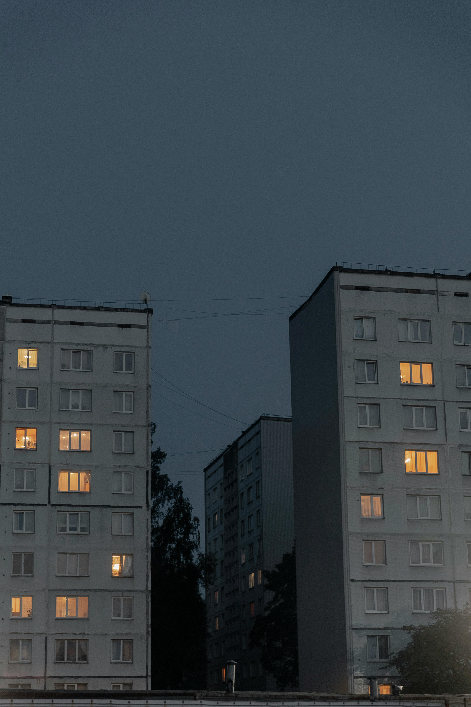
KomunikatObowiązek wykwaterowania z DS „Żaczek”
06.06.2025
Autor: Kanclerz
Ze względu na stan techniczny budynku mieszkańcy DS „Żaczek” muszą opuścić akademik do 7 lipca.
Uczelnia zapewni miejsca zastępcze w innych domach studenckich PW.
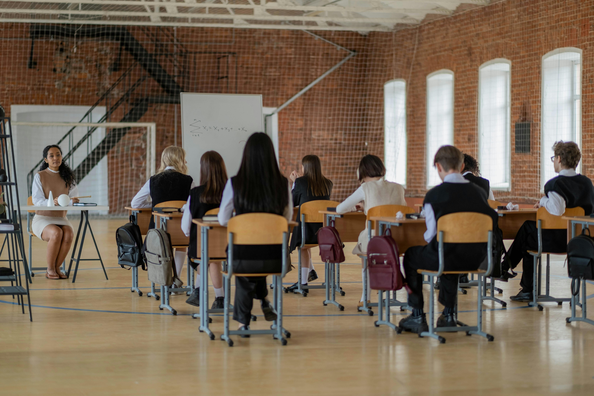
Złota Kreda✨ Głos w Twoich Rękach! Złota Kreda 2025 ✨
06.06.2025
Autor: Komisja Dydaktyczna Samorządu Studentów PW
Złota Kreda to wyjątkowa inicjatywa Samorządu Studentów PW, w której to sami studenci decydują, którzy
prowadzący zasługują na wyróżnienie za jakość nauczania i postawę pełną empatii. Głosowanie w
plebiscycie to nie tylko forma uznania, ale także ważny sygnał doceniający zaangażowanie dydaktyczne
wykładowców i prowadzących zajęcia.
Hackathon
Dołącz do Hack4Music – stwórz z nami przyszłość
muzyki
05.06.2025
Autor: Biuro Karier
Hack4Music to wyjątkowe wydarzenie na styku technologii i sztuki, gdzie programiści, projektanci i
miłośnicy muzyki wspólnie tworzą innowacyjne rozwiązania ułatwiające dostęp do kultury muzycznej.
Organizowany przez NOSPR hackathon to nie tylko przestrzeń kreatywnej pracy, ale też okazja do
nawiązania wartościowych kontaktów i rywalizacji o nagrody w inspirującym środowisku.
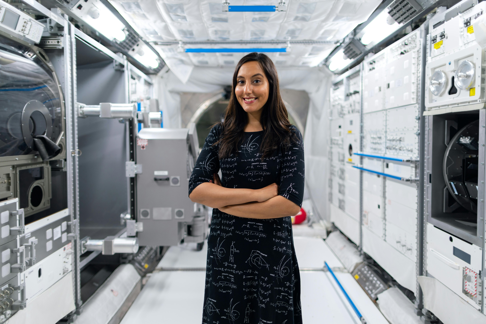
SukcesReprezentantki PW na liście TOP100 Women in
Engineering
05.06.2025
Autor: Biuro Komunikacji i Promocji
Aż osiem naukowczyń z PW wyróżniono w prestiżowym zestawieniu. Dr hab. inż. Agnieszka Gadomska-Gajadhur
zdobyła nagrodę główną w kategorii etyki i innowacji.
Innowacja
Sukces reprezentantów KN Kraken na SpaceShield
Hack
05.06.2025
Autor: BKiP / KN Kraken
Członkowie Koła Naukowego Kraken po raz kolejny udowodnili swoją kreatywność i zaangażowanie, triumfując
w hackathonie SpaceShield Hack. Ich innowacyjny projekt, łączący tematykę kosmiczną z wyzwaniami
środowiskowymi, został wyróżniony jako najlepszy w swojej kategorii i może stanowić inspirację dla
dalszego rozwoju technologii przeciwdziałających skutkom zmian klimatu.
Organizacja
Nieobecność Prodziekana ds. nauczania i dodatkowe
terminy przyjęć studentów
04.06.2025
Autor: WEITI / Dziekanat ds. nauczania
W związku z krótką nieobecnością Prodziekana ds. nauczania zaplanowane przyjęcia studentów w dniach 9 i
11 czerwca nie odbędą się zgodnie z harmonogramem. Dziekanat informuje jednak o możliwości skorzystania
z dodatkowych godzin konsultacyjnych w czwartek 12 czerwca.
Samorząd
IV Zwyczajne Posiedzenie Parlamentu Samorządu
Studentów PW
04.06.2025
Autor: Parlament Studentów PW
Posiedzenia Parlamentu SSPW to ważna przestrzeń debaty i dialogu między studentami a władzami
Politechniki Warszawskiej. Dzisiejsze obrady będą okazją do poruszenia kluczowych spraw studenckich, w
tym kwestii związanych z akademikiem „Żaczek”, a także bezpośredniego spotkania z Rektorem, Prorektorem
ds. studenckich i Kanclerz uczelni.
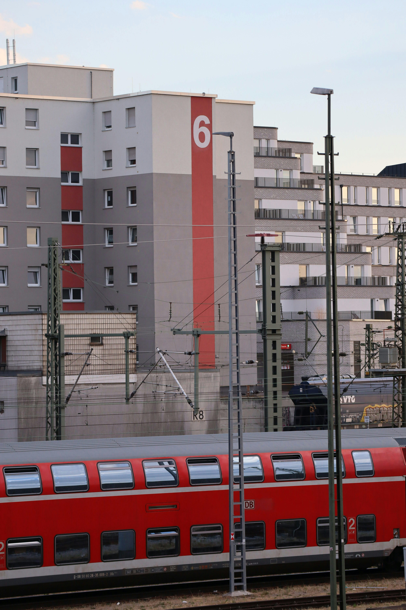
ZakwaterowanieKomunikat w sprawie Domu Studenckiego „Żaczek”
04.06.2025
Autor: Rzecznik Prasowy
PW podejmuje działania zmierzające do zamknięcia akademika „Żaczek” i przeniesienia studentów do innych
domów.
Zapowiedziano generalny remont oraz zapewnienie wsparcia mieszkańcom.
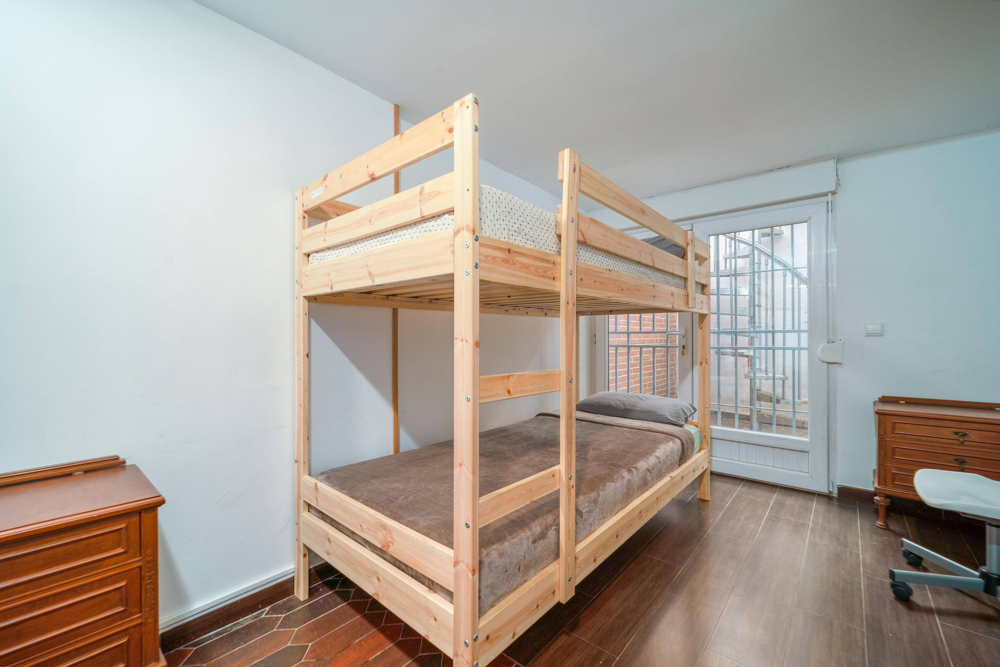
Zakwaterowanie📣 Wakacyjna akcja kwaterunkowa startuje!
03.06.2025
Autor: Komisja Kwaterunkowa Samorządu Studentów PW
Zbliżające się wakacje to idealny moment, by zadbać o zakwaterowanie – bez względu na to, czy planujesz
zostać w akademiku, czy potrzebujesz miejsca tylko na lato. Już 10 czerwca rusza rejestracja w ramach
letniej akcji kwaterunkowej, a wszystkie szczegóły dostępne są online, byś mógł wszystko załatwić
wygodnie i z wyprzedzeniem.
Dydaktyka
💼 Czas na ankietyzację!
03.06.2025
Autor: Komisja Dydaktyczna Samorządu Studentów PW
Zanim zakończysz semestr i rozpoczniesz wakacyjny odpoczynek, poświęć chwilę na wypełnienie ankiet
ewaluacyjnych w USOS. To właśnie dzięki Twojej opinii możliwe są realne zmiany i udoskonalenia zajęć –
głos studentów ma znaczenie i wpływa na kształt przyszłych semestrów.
 Dydaktyka
Dydaktyka
📃 Ankietyzacja – podziel się opinią o przedmiotach
i prowadzących!
02.06.2025
Autor: Komisja Dydaktyczna Samorządu Studentów PW
Ankietyzacja to ważny element wpływu studentów na jakość kształcenia – dzięki niej uczelnia może
reagować na realne potrzeby i sugestie uczestników zajęć. Każda opinia się liczy, niezależnie od tego,
czy wskazuje na problem, czy docenia dobre praktyki, a dodatkową motywacją może być szansa na nagrodę za
pełne zaangażowanie.
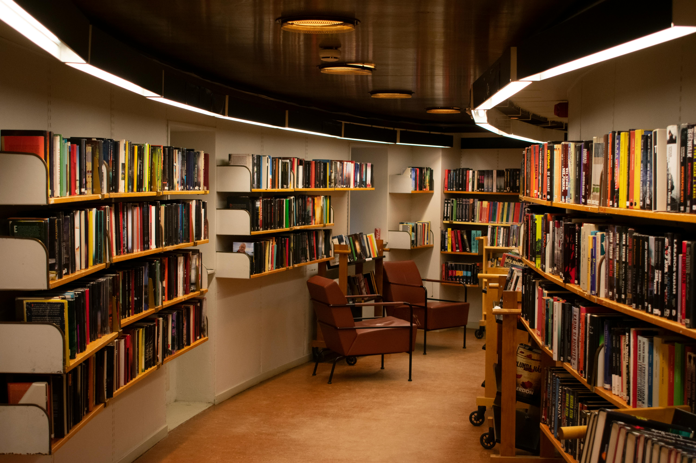
DostępnośćWydłużone godziny otwarcia Biblioteki Wydziałowej
02.06.2025
Autor: WEITI / Biblioteka
W dniach 9–13, 16–18 i 23–24 czerwca biblioteka czynna będzie od 9:00 do 20:00. W weekendy i 19–22
czerwca biblioteka będzie nieczynna.
Badania i AI
Centrum Wiarygodnej Sztucznej Inteligencji na PW
zainaugurowało swoją działalność
01.06.2025
Autor: Centrum Wiarygodnej Sztucznej Inteligencji
Na PW rozpoczęło działalność Centrum CCAI kierowane przez prof. Przemysława Biecka. Celem jest rozwój
systemów explainable AI,
audyt algorytmów i edukacja specjalistów. To interdyscyplinarna jednostka łącząca informatykę,
matematykę i nauki społeczne.
Infrastruktura
Laboratorium dla elektroniki nowej generacji
30.05.2025
Autor: CEZAMAT
W CEZAMAT uruchomiono laboratorium LATTICE z nowym reaktorem MOCVD do badań nad materiałami 2D.
To inwestycja w przyszłość elektroniki: miniaturyzacja, energooszczędność i nowe właściwości.
Projekt prof. Zdrojka i dr Sitka otrzymał 9,3 mln zł finansowania z MEiN.
Kariera
Wakacyjne praktyki w Rhenus – zdobywaj
doświadczenie w branży TSL
29.05.2025
Autor: Biuro Karier
Letnie praktyki w Rhenus to świetna okazja, by zdobyć pierwsze doświadczenia zawodowe w dynamicznie
rozwijającej się branży transportu, spedycji i logistyki. Elastyczny grafik, pełne wsparcie mentora oraz
konkretne zadania umożliwiające naukę przez działanie sprawiają, że to idealna propozycja zarówno dla
osób dopiero wchodzących na rynek pracy, jak i tych, którzy chcą związać się z TSL na dłużej.
 Rekrutacja
Rekrutacja
Apply to First Ascent Poland! – bezpłatny tech
retreat dla studentów
29.05.2025
Autor: Biuro Karier
First Ascent Poland to niepowtarzalna okazja, by w kameralnym gronie najlepszych studentów z całego
kraju zgłębić najnowsze trendy w technologiach i programowaniu. Organizowany przez renomowaną firmę
Bending Spoons retreat to nie tylko warsztaty i wykłady, ale także networking, inspiracje i pełne
zanurzenie w świat IT – całkowicie za darmo.
 Kursy IT
Kursy IT
Program wakacyjny Java JUMP – intensywny kurs dla
kobiet w IT
28.05.2025
Autor: Biuro Karier
Java JUMP to intensywny bootcamp, który otwiera drzwi do świata programowania kobietom z różnych
kierunków studiów – nawet tym bez wcześniejszego doświadczenia w IT. Program skupia się na praktycznej
nauce języka Java i rozwoju kompetencji technicznych, dając uczestniczkom realną szansę na rozpoczęcie
kariery zawodowej w prestiżowych firmach technologicznych.
Projekty studenckie
Nowa rakieta studentów PW – Twardowsky 2
28.05.2025
Autor: BKiP / SKA
SKA PW zaprezentowało swoją najpotężniejszą rakietę – Twardowsky 2. 4-metrowa konstrukcja ma wynieść
ładunek CubeSat na 9 km wysokości.
Projekt przygotowano na zawody EuRoC i Spaceport America Cup – nowatorski silnik i system odzysku to
kluczowe elementy.
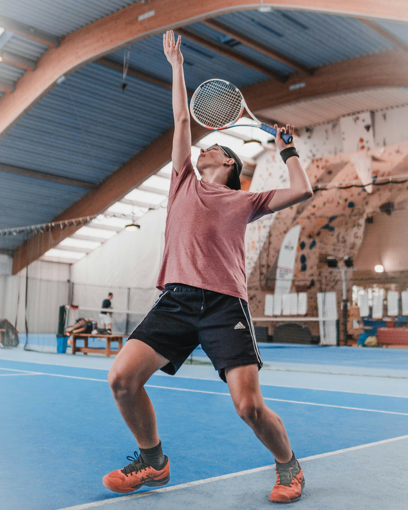
Inwestycje PWBudowa hali sportowo-widowiskowej na Stadionie
Syrenki
26.05.2025
Autor: Jego Magnificencja Rektor
Politechnika Warszawska planuje halę widowiskowo-sportową przy Stadionie Syrenki. Budowa potrwa do
czerwca 2028 r.,
a koszt inwestycji to 100 mln zł. Koordynatorem projektu został mgr inż. Mirosław Dudra.
Konkursy
Rurki z klejem i Mostozaury na podium wyKOMBinuj
mOst 2025
23.05.2025
Autor: BKiP / WIL
Tegoroczna edycja ogólnopolskiego konkursu „wyKOMBinuj mOst” ponownie okazała się triumfem konstruktorów
z Politechniki Warszawskiej, którzy pokazali nie tylko precyzję i pomysłowość, ale też imponującą
wytrzymałość swoich projektów. W rywalizacji liczyły się zarówno lekkość, jak i nośność konstrukcji, a
zespoły PW potwierdziły swoją dominację w tej nietypowej, technicznej konkurencji.
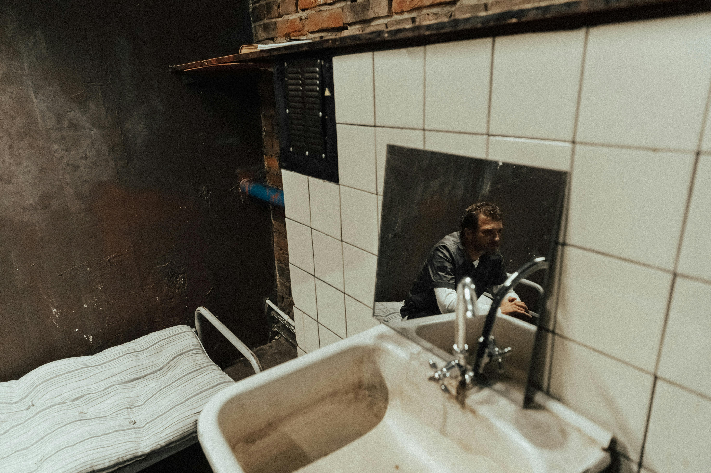
Inwestycje w akademikachMontaż drzwi EI 60 w DS Babilon
21.05.2025
Autor: Jego Magnificencja Rektor
W DS PW Babilon przy ul. Kopińskiej zostaną zamontowane drzwi o odporności ogniowej EI 60 w
rozdzielniach elektrycznych.
Inwestycja o wartości 200 tys. zł potrwa do końca 2025 r. Koordynatorem zadania jest mgr Rafał Byczot.
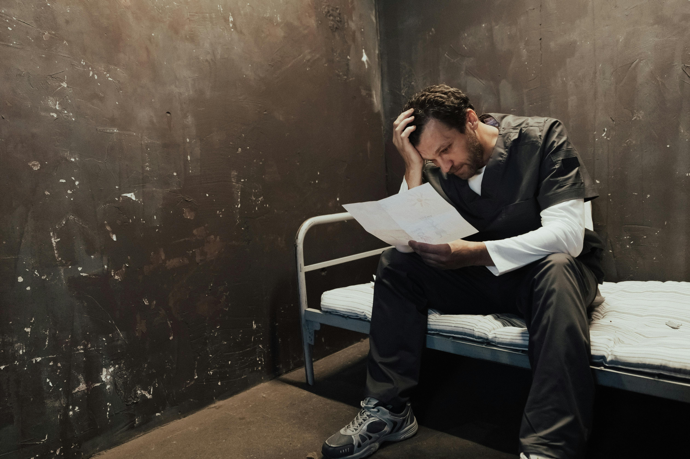
ModernizacjaPrzebudowa windy przeciwpożarowej w DS Riviera
21.05.2025
Autor: Jego Magnificencja Rektor
W akademiku Riviera przy ul. Waryńskiego rozpoczęła się przebudowa windy przeciwpożarowej. Koszt
inwestycji wynosi 800 tys. zł,
a zakończenie prac planowane jest do końca grudnia. Projekt koordynuje Michał Waś.
Badania PW
Ambipolarny przełom w elektronice organicznej
21.05.2025
Autor: Wydział Chemiczny
Przełomowe badania zespołu z Wydziału Chemicznego Politechniki Warszawskiej mogą zmienić oblicze
elektroniki organicznej – nowo opracowany tranzystor OECT cechuje się ambipolarnym przewodnictwem i
stabilnością w środowisku wodnym. Innowacyjna technologia oparta na elektropolimeryzacji otwiera nowe
możliwości dla przyszłościowych rozwiązań w dziedzinach takich jak neuroelektronika czy systemy
neuromorficzne.
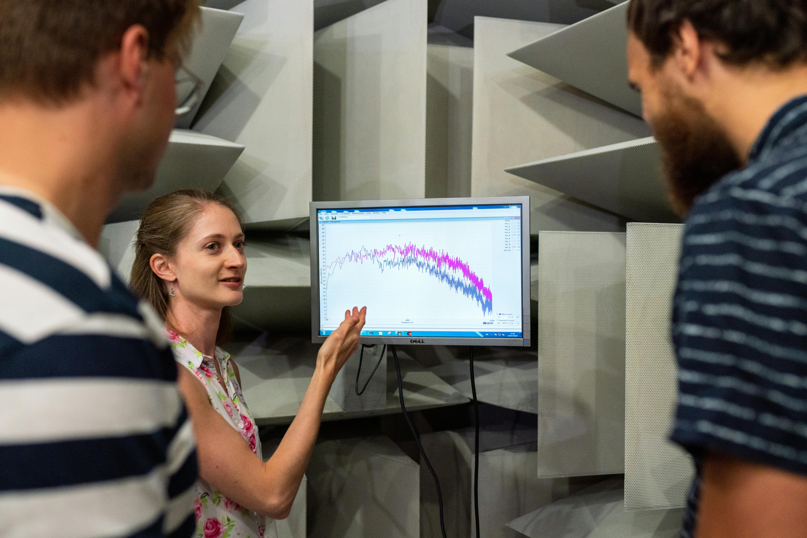
Nagrody i wyróżnieniaDr Agnieszka Kucharska z PW z nagrodą 2025 SAS
Educator Award
20.05.2025
Autor: Wydział Zarządzania
Doceniona na arenie międzynarodowej, dr Agnieszka Kucharska została wyróżniona za nowatorskie podejście
do nauczania analizy danych i promowanie nowoczesnych narzędzi BI w ramach specjalistycznego kursu
mikropoświadczeniowego. Jej praca na Wydziale Zarządzania PW pokazuje, jak skutecznie łączyć edukację
akademicką z potrzebami współczesnego rynku technologii.
Sztuczna inteligencja
DeepQuadrature: jedna ramka, pełna precyzja
20.05.2025
Autor: Wydział Mechatroniki
Nowatorskie podejście badaczy z Politechniki Warszawskiej pokazuje, jak sztuczna inteligencja może
rewolucjonizować precyzyjne pomiary optyczne. DeepQuadrature, opracowane we współpracy międzynarodowej,
umożliwia jednoramkową analizę obrazów holograficznych i stanowi dostępne publicznie narzędzie, które
może znaleźć szerokie zastosowanie w naukach przyrodniczych i technice.
 Cyberbezpieczeństwo
Cyberbezpieczeństwo
Cyberbezpieczeństwo w praktyce – studenci PW uczą w
szkołach
19.05.2025
Autor: Biuro Komunikacji i Promocji
Cyberbezpieczeństwo staje się kluczowym elementem edukacji młodzieży, a studenci Politechniki
Warszawskiej aktywnie włączają się w jego popularyzację. Dzięki wsparciu Google i zaangażowaniu
studentów z trzech wydziałów, projekt obejmuje praktyczne lekcje pokazowe, które rozwijają świadomość
cyfrową uczniów w całej Polsce.
 Biblioteka
Biblioteka
Nowości biblioteczne – maj 2025
15.05.2025
Autor: WEITI / Biblioteka
Majowe nowości w bibliotece WEiTI to gratka dla pasjonatów nowoczesnych technologii – na półkach
pojawiły się najnowsze publikacje poświęcone generatywnej AI, uczeniu maszynowemu, Pythonowi, C++,
DevOps i Kubernetes. Zbiory te stanowią cenne wsparcie dla studentów i badaczy poszukujących aktualnych
źródeł wiedzy z obszaru informatyki i inżynierii danych.
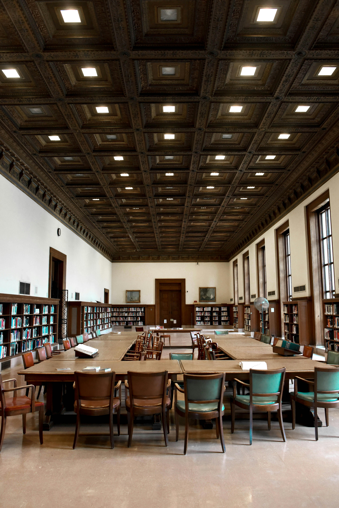
TerminarzHarmonogram roku akademickiego 2025/2026
14.05.2025
Autor: Komisja Dydaktyczna Samorządu Studentów PW
Opublikowano terminy zajęć, sesji i przerw w roku akademickim 2025/2026. Zajęcia potrwają od 2
października do 30 września.
Dla Filii w Płocku przewidziano odrębny dzień Juwenaliów.
Stypendia
Wydłużenie terminu składania wniosków o Stypendium
Senatu PW
14.05.2025
Autor: Biuro Kanclerza
Dla wszystkich zainteresowanych wsparciem finansowym od uczelni nadarza się dodatkowa szansa –
Politechnika Warszawska ogłosiła przedłużenie terminu składania wniosków o Stypendium Senatu. To ważna
informacja zarówno dla studentów, jak i doktorantów planujących aplikację, którzy zyskali kilka dni
więcej na dopełnienie formalności.
 Studia
Studia
Wybór specjalności dla studentów 4 semestru –
2025L
05.05.2025
Autor: WEiTI / Dziekanat ds. nauczania
Rozpoczął się kluczowy etap dla studentów kończących 4. semestr – wybór specjalności, który zadecyduje o
dalszym kierunku kształcenia. Proces odbywa się elektronicznie i wymaga dokładności oraz znajomości
zasad przypisanych do poszczególnych kierunków, dlatego warto dokładnie zapoznać się z instrukcją i
uczestniczyć w spotkaniach informacyjnych z kierownikami specjalności.
Dyplomy
ODBIÓR DYPLOMÓW – zmiana lokalizacji!
28.04.2025
Autor: Dział ds. Studiów
Absolwenci odbierający dyplomy powinni zwrócić uwagę na zmianę miejsca ich wydawania – od teraz
formalności załatwiane są przy ul. Rektorskiej 4. Nowa lokalizacja oraz zaktualizowane godziny przyjęć
ułatwią organizację odbioru dokumentów, a w razie wątpliwości warto skorzystać z kontaktu telefonicznego
lub mailowego.
Wydział
Zmiana organizacji zajęć 15 maja na WEiTI
28.04.2025
Autor: WEiTI / Dziekan
W związku z obchodami Dnia Wydziału WEiTI i Elkonaliów zaplanowanymi na 15 maja, wprowadzono częściowe
zmiany w organizacji zajęć. Studenci powinni zwrócić szczególną uwagę na godziny rozpoczęcia swoich
wykładów – te po 14:00 nie odbędą się, natomiast wszystkie inne zajęcia pozostają bez zmian.
Regulamin
Zmiany w Regulaminie studiów PW od października
2025 r.
23.04.2025
Autor: Senat PW
Od 1 października 2025 r. wejdą w życie nowe przepisy regulaminowe, dotyczące m.in. ślubowania,
opiekunów studentów z niepełnosprawnością, zasad odwoławczych i organizacji zajęć. Nowy regulamin
zostanie udostępniony przed rozpoczęciem semestru.
Stypendia
Odbiór decyzji stypendialnych
17.04.2025
Autor: WEiTI / Dziekanat ds. Studenckich
Studenci WEiTI mogą już zapoznać się z decyzjami stypendialnymi za pośrednictwem systemu USOSWeb. Dla
tych, którzy chcą szybciej otrzymać świadczenie, możliwe jest zrzeczenie się prawa do odwołania, co
znacząco przyspiesza procedurę i umożliwia wcześniejszą wypłatę środków.
Komunikat
Dziekanat ds. Studenckich nieczynny 10–11
kwietnia
17.04.2025
Autor: WEiTI / Dziekanat ds. Studenckich
W związku z czasową niedostępnością Dziekanatu ds. Studenckich na początku kwietnia, studenci zostali
poinformowani o możliwości uzyskania pomocy w innych jednostkach wydziału. Taka organizacja miała
zapewnić ciągłość obsługi w pilnych sprawach studenckich.
Języki
Egzamin B2 dla studentów niestacjonarnych – sesja
letnia
01.04.2025
Autor: Studium Języków Obcych
Studenci studiów niestacjonarnych PW powinni przygotować się do egzaminu językowego na poziomie B2,
który odbędzie się w czerwcu 2025 roku. Egzamin obejmuje zarówno część pisemną, jak i ustną, a
organizatorzy przewidzieli także procedury dla osób z wcześniejszymi zaliczeniami, wyjątkami zdrowotnymi
oraz potrzebą egzaminu komisyjnego.
Praktyki
Zaliczanie praktyk zawodowych w semestrze 2025L
31.03.2025
Autor: WEiTI / Dziekanat ds. Studenckich
Zaliczenie praktyk zawodowych w semestrze letnim 2025 to obowiązkowy element programu studiów,
szczególnie istotny dla studentów 6. semestru. Rejestracja odbywa się za pośrednictwem USOS, a dalsze
instrukcje dotyczące przebiegu i dokumentacji praktyk udzielane są przez opiekunów instytutowych – warto
działać z wyprzedzeniem, by uniknąć niepotrzebnych komplikacji.
Egzamin
C1 Exam in Academic English – sesja letnia
2024/2025
28.03.2025
Autor: Studium Języków Obcych
Studenci studiów anglojęzycznych przygotowujący się do letniej sesji egzaminacyjnej powinni pamiętać o
zbliżającym się terminie egzaminu z języka akademickiego na poziomie C1. Organizatorzy przewidzieli
pełną ścieżkę rejestracji, możliwość automatycznego zwolnienia z części ustnej oraz opcję egzaminu
warunkowego – wszystko z myślą o sprawnym i przejrzystym przebiegu sesji.
B2 ACERT
Egzamin B2 ACERT – sesja letnia 2024/2025
25.03.2025
Autor: Studium Języków Obcych
Studenci przystępujący do egzaminu B2 ACERT w sesji letniej powinni uważnie zapoznać się z harmonogramem
oraz procedurami zapisów. Egzamin składa się z części pisemnej i ustnej, z dodatkowymi możliwościami dla
osób ze szczególnymi potrzebami oraz trybem komisyjnym dla tych, którym egzamin B2 pozostał jako jedyny
warunek ukończenia studiów.
 Staż
Staż
RAS TECH Summer – płatny staż wakacyjny
13.03.2025
Autor: WEiTI / Instytut Informatyki
Letni program stażowy RAS TECH Summer to okazja dla studentów, by zdobyć praktyczne doświadczenie w
nowoczesnym środowisku technologicznym Ringier Axel Springer. Oferta skierowana jest zarówno do
przyszłych programistów, jak i osób zainteresowanych obszarami pokrewnymi, takimi jak dane, chmura czy
zarządzanie projektami – to szansa na rozwój kompetencji i zaliczenie obowiązkowej praktyki w jednym.
Organizacja
Zmiany w zasadach wydawania kart wjazdowych PW
07.03.2025
Autor: Kanclerz
Zaktualizowano zasady wydawania kart wjazdowych na teren kampusu Główny i Główny BIS. Nowe godziny i
opłata 200 zł dotyczą studentów niestacjonarnych i słuchaczy studiów podyplomowych. Szczegóły w nowym
regulaminie.
 Mobilność
Mobilność
Rekrutacja na studia w ramach programu KEUDOS
03.03.2025
Autor: WEiTI / Dziekanat ds. Kształcenia
Program KEUDOS to wyjątkowa szansa na zdobycie dwóch dyplomów – polskiego i koreańskiego – w ramach
jednych studiów inżynierskich. Uczestnicy spędzają trzy lata na PW i rok na KNU w Korei Południowej, a
rekrutacja wymaga odpowiedniego dorobku ECTS oraz udokumentowanej znajomości języka angielskiego.
Stypendium
Specjalne Stypendium Jana Tomaki – nabór 2025
28.02.2025
Autor: BK / CWM
Politechnika Warszawska ogłosiła nabór do edycji letniej Specjalnego Stypendium Jana Tomaki – programu
wspierającego studentów i doktorantów pochodzących z Etiopii lub innych krajów afrykańskich. Inicjatywa
ta ma na celu wyrównywanie szans i udzielanie wsparcia osobom studiującym w Polsce, które potrzebują
dodatkowego wsparcia finansowego.
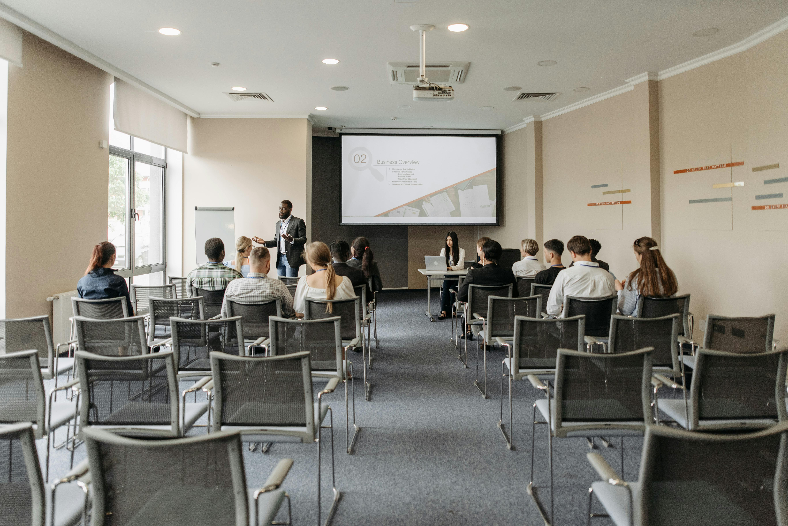
Erasmus+Rekrutacja studentów na wyjazdy – Erasmus+
27.02.2025
Autor: WEiTI / Dziekanat ds. Kształcenia
Program Erasmus+ otwiera przed studentami WEITI możliwość zdobycia międzynarodowego doświadczenia
akademickiego w roku 2025/2026. Aby wziąć udział w rekrutacji, należy spełnić określone kryteria
formalne i terminowo złożyć dokumenty, a zakwalifikowani kandydaci będą odpowiedzialni za kontakt z
uczelnią partnerską i przygotowanie odpowiednich porozumień.
Dostępność
Zgłaszanie niezgodności projektu FERS z KPON
26.02.2025
Autor: Biuro ds. Społecznej Odpowiedzialności Uczelni
W ramach realizowanego na PW projektu „Horyzont doskonałości…” istnieje możliwość zgłaszania wszelkich
niezgodności z międzynarodowymi standardami ochrony praw osób z niepełnosprawnościami. Biuro ds.
Społecznej Odpowiedzialności Uczelni przypomina, że każdy sygnał traktowany jest jako oficjalne
zgłoszenie, a procedura składania umożliwia kontakt zarówno drogą elektroniczną, jak i tradycyjną.
Stypendium
Ruszyła akcja stypendialna – semestr letni
2024/2025
24.02.2025
Autor: WEiTI / Dziekanat ds. Studenckich
Dziekanat ds. Studenckich WEiTI przypomina o rozpoczęciu procedury składania wniosków stypendialnych na
semestr letni 2024/2025. Aby nie przegapić żadnego z etapów, studenci powinni zwrócić szczególną uwagę
na terminy weryfikacji średniej ocen, składania wniosków i ewentualnej korekty punktów za osiągnięcia.
 BHP
BHP
E-kurs BHP dla studentów
21.02.2025
Autor: Inspektorat BHP
Zgodnie z zarządzeniem Rektora, wstępne szkolenie z zakresu bezpieczeństwa i higieny pracy jest
obowiązkowe dla studentów pierwszego roku wszystkich form studiów. Szkolenie realizowane jest online, a
jego zaliczenie stanowi warunek konieczny do dalszego toku studiów – warto więc zapoznać się z
instrukcją logowania i nie odkładać tego obowiązku na ostatnią chwilę.
Etyka
Wniosek o wydanie opinii etycznej
19.02.2025
Autor: Biuro Społecznej Odpowiedzialności Uczelni
W trosce o najwyższe standardy prowadzenia badań naukowych z udziałem ludzi, Politechnika Warszawska
umożliwia naukowcom złożenie wniosku o opinię etyczną dotyczącą ich projektu. Przed rozpoczęciem badań
warto zapoznać się z procedurą składania wniosku oraz wymaganymi dokumentami – odpowiednie informacje
znajdują się na stronie BiSOU.
Egzaminy językowe
Sesja letnia 2024/2025 – egzaminy językowe B2 i
C1
14.02.2025
Autor: Studium Języków Obcych
Studium Języków Obcych PW ogłasza harmonogram egzaminów B2 i C1 dla studentów wszystkich trybów studiów.
W zależności od typu egzaminu – ACERT, Academic lub General – obowiązują różne terminy, procedury
rejestracji i zasady. Warto uważnie zapoznać się z wymaganiami i zaplanować udział z wyprzedzeniem.
C1 General
Egzamin C1 General – sesja letnia 2024/2025
14.02.2025
Autor: Studium Języków Obcych
Studium Języków Obcych PW zaprasza do udziału w egzaminie C1 General, który jest okazją do formalnego
potwierdzenia znajomości języka angielskiego na poziomie zaawansowanym. Egzamin skierowany jest do
studentów studiów polskojęzycznych i nie zastępuje obowiązkowego egzaminu C1 Academic dla kierunków
anglojęzycznych.
Lektorat
Język włoski z Architekturą – nowy lektorat
07.02.2025
Autor: SJO / Wydział Architektury
Jeśli interesujesz się językiem włoskim i architekturą współczesną, nowy kurs projektowy prowadzony na
Wydziale Architektury może być idealną propozycją. Uczestnicy będą pracować w małych grupach nad
projektami, ucząc się opisywać je po włosku oraz poznając stylistykę i praktyki projektowe Mediolanu –
jednego z najważniejszych ośrodków architektury w Europie.
SDGs
Lektorat: język polski w komunikacji – SDGs
07.02.2025
Autor: Studium Języków Obcych
Dla studentów chcących rozwijać swoje umiejętności językowe w kontekście istotnych problemów
współczesnego świata, Studium Języków Obcych PW przygotowało nowy lektorat oparty na Celach
Zrównoważonego Rozwoju ONZ. Kurs łączy naukę języka z refleksją nad tematami społecznymi, ekologicznymi
i ekonomicznymi, oferując praktyczne ćwiczenia komunikacyjne i angażujące materiały w językach polskim i
angielskim.
Rejestracja
Rejestracja na semestr letni 2024/2025 – ważne
informacje i terminy
05.02.2025
Autor: WEiTI / Prodziekan ds. Nauczania
Zbliża się czas rejestracji na kolejny semestr, dlatego warto zapoznać się z pełnym harmonogramem
działań oraz procedurami odwoławczymi. W komunikacie znajdują się szczegółowe informacje o terminach
składania wyjaśnień, rozmowach z kadrą dydaktyczną oraz zasadach udziału w egzaminach komisyjnych – ich
znajomość pomoże uniknąć nieporozumień i zapewnić ciągłość studiów.
Domy studenckie
Nowy regulamin zakwaterowania w domach studenckich
PW
28.01.2025
Autor: Komisja Kwaterunkowa SSPW
Od 1 marca 2025 r. obowiązuje nowy regulamin zakwaterowania. Opłaty rezerwacyjne zmieniają status na
gwarancyjne, chyba że student złoży sprzeciw. Szczegóły zawarte w zarządzeniu Rektora.
Polski jako obcy
Kursy języka polskiego online – przygotowanie do
egzaminów B1 / B1-B2
24.01.2025
Autor: Ośrodek Języka Polskiego
Dla osób przygotowujących się do egzaminów z języka polskiego jako obcego, Ośrodek Języka Polskiego
Politechniki Warszawskiej oferuje specjalistyczne kursy online dostosowane do poziomu A2/B1. Dzięki
różnym formatom zajęć uczestnicy mogą wybrać intensywną formułę weekendową lub regularne spotkania
tygodniowe, zapewniające solidne przygotowanie do egzaminów państwowych i telc.
Parking
Nowy regulamin korzystania z parkingów PW
22.01.2025
Autor: Kanclerz
Zaktualizowano zasady wjazdu na teren kampusu, odpowiedzialności użytkowników oraz działania Straży
Akademickiej. Parkingi rowerowe pozostają bezpłatne. Szczegóły znajdują się w zarządzeniu.
 Zapisy
Zapisy
Procedura zapisów na przedmioty – semestr letni
2024/2025
22.01.2025
Autor: WEiTI / Dziekanat ds. Nauczania
Zbliża się okres rejestracji na przedmioty w semestrze letnim na WEiTI – kluczowy moment dla studentów
planujących układ zajęć na kolejny semestr. Warto zapoznać się z harmonogramem tur oraz zasadami
składania próśb, by sprawnie przejść przez procedurę i uniknąć problemów z zapisami.
Wydział
Powołanie kierowników specjalności na WEiTI PW
08.01.2025
Autor: WEiTI / Dziekan
W ramach działań na rzecz podnoszenia jakości kształcenia na Wydziale Elektroniki i Technik
Informacyjnych PW, wprowadzono strukturę kierowników specjalności odpowiedzialnych za merytoryczny
nadzór i organizację wybranych ścieżek edukacyjnych. Nowe decyzje mają usprawnić komunikację między
studentami, wykładowcami i komisjami dydaktycznymi, wspierając rozwój kierunków studiów zgodnie z
aktualnymi potrzebami rynku i środowiska akademickiego.
Wsparcie
Informacja dla studentów pochodzących z terenów
objętych powodzią
31.10.2024
Autor: WEiTI / Dziekanat ds. Studenckich
Politechnika Warszawska wyciąga pomocną dłoń do studentów dotkniętych skutkami wrześniowej powodzi,
oferując możliwość otrzymania zapomogi w ramach wsparcia socjalnego. Uczelnia zachęca do składania
wniosków i kontaktu z dziekanatem w celu uzyskania indywidualnej pomocy.